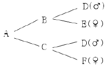
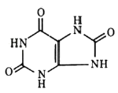
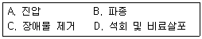
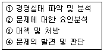

축산기사 (2013-03-10 기출문제)
1과목: 가축육종학
1. X형질과 Y형질의 유전분산은 각각 4.0 및 9.0이며 이들 두 형질간 유전공분산은 3.0이다. 이들 두 형질간 유전상관은?
- 0.4
- 0.5
- 0.6
- 0.7
(정답률: 69%)

2. 후대검정시 선발의 정확도를 높이는 방법으로 옳지 않은 것은?
- 후대 자손수를 많게 한다.
- 교배시 암가축 수보다 수가축의 수를 많게 한다.
- 후대검정시 교배되는 암가축의 능력을 고르게 한다.
- 환경요인의 영향을 균등하기 위하여 여러 곳에서 검정을 한다.
(정답률: 63%)
3. 한우의 후대검정의 단점에 해당하는 것은?
- 유전적으로 우수한 개체를 확인할 수 없다.
- 선발된 개체는 인공수정에 이용할 수 없다.
- 산육능력에 대한 검정이 불가능하다.
- 자손의 능력에 근거하므로 세대간격이 길어진다.
(정답률: 83%)
4. 연간 유전적 개량량을 크게 하기 위한 방법으로 옳지 않은 것은?
- 집단의 규모를 크게 한다.
- 세대간격이 길어야 한다.
- 환경변이 보다 상가적 유전변이가 커야한다.
- 선발된 집단과 모집단의 평균 차이가 커야한다.
(정답률: 89%)
5. 젖소품종인 홀스타인에는 r이라는 열성유전자가 있어 붉고 흰반점이 나타나고 우성유전자인 R은 검고 흰반점을 나타나게 한다. 만약 열성유전자를 갖고 있는 이형접합체 수소를 열성유전자를 갖고 있는 이형접합체 암소에 교배시켰을 때, 처음의 새끼가 붉고 흰 반점을 지닐 확률은?
- 1/2
- 1/3
- 3/4
- 1/4
(정답률: 67%)
6. 젖소 중 암소의 표준 비유기간은?
- 3⑤일
- 325일
- 345일
- 365일
(정답률: 91%)
7. 다음 중 산란계의 경제형질이 아닌 것은?
- 산란능력
- 난중
- 육성율
- 난형지수
(정답률: 82%)
8. 젖소를 개량할 때에 주로 이용되는 유전자 작용은?
- 초우성 유전자 작용
- 상위성 유전자 작용
- 우성 유전자 작용
- 상가적 유전자 작용
(정답률: 60%)
9. 다음 중 하나의 유전자가 여러 형질을 지배하는 현상을 설명한 것은?
- 유전자의 다면작용
- 두 유전자좌간의 연관
- 유전자 상위성
- 혈액형 유전자좌에서의 이형접합
(정답률: 84%)
10. 근친교배의 이용 목적이 아닌 것은?
- 어떤 유전자를 고정하고자 할 때
- 특정개체와 혈연관계가 높은 자손을 생산키 위해
- 근교계통을 조성하여 근교계통간 교잡으로 잡종강세를 얻기 위해
- 근친교배를 통해 산란율, 수정율과 같은 생산능력을 높히고자 할 때
(정답률: 60%)
11. 돼지의 경제형질에 대한 유전력이 가장 낮은 것은?
- 복당산자수
- 일당증체량
- 사료효율
- 등지방두께
(정답률: 77%)
12. 작용이 비슷하여 동일방향으로 작용함으로써 동일한 혈질을 나타내는 두 쌍 이상의 독립유전자를 동의 유전자(polymery)라고 한다. 다음 중 동의 유전자에 속하지 않는 것은?
- 상위유전자(epistatic gene)
- 복다유전자(multiple gene)
- 중다유전자(poly gene)
- 중복유전자(duplicate gene)
(정답률: 75%)
13. 흑색무각인 애버딘앵거스종(♀)을 적색유각인 레드쇼트혼종(♂)과 교배시켰더니 10두의 송아지 중 6두는 흑색무각이였고, 4두는 흑색유각 송아지였다. 모색은 흑색 유전자(B)가 적색유전자(b)에 대하여 우성으로 작용하며, 뿔은 무각 유전자(P)가 유각 유전자 (p)에 대하여 우성으로 작용한다고 한다. 흑색 무각인 애버딘앵거스종 소의 유전자형은?
- BBPP
- BBPp
- BbPP
- BbPp
(정답률: 53%)
14. 근친교배의 위험성을 가장 적게 할 수 있는 교배법은?
- 가계선발
- 후대검정
- 가계 내 선발
- 상반반복 선발법
(정답률: 57%)
15. 돼지의 품종간 교배에서 잡종강세 효과가 가장 현저한 형질은?
- 사료효율
- 생존 자돈의 생시체중
- 1복당 이유시 전체체중
- 1복당 생존 자돈의 수
(정답률: 41%)
16. 유전상관이 부(負)의 관계인 형질들은?
- 닭의 산란수와 초산일령
- 돼지의 체중과 등지방층 두께
- 소의 체중과 사료섭취량
- 닭의 체중과 난중
(정답률: 68%)
17. 어떤 양계장에서 산란계의 수수가 6월 1일에 100수였는데 6월 5일에 2수, 6월 15일에 3수가 죽었으며, 7월 중 총 산란수가 2280개라면 이 양계장의 6월 중산란지수(hen house egg production)는?
- 78.5%
- 76.0%
- 22.8개/수
- 24개/수
(정답률: 67%)
18. 근친교배에 대한 설명 중 틀린 것은?
- 번식능력 저하
- 이형접합체의 비율 감소
- 동형접합체의 비율 증가
- 강건한 자손 생산
(정답률: 85%)
19. 다음 혈통도에서 A의 근교계수는 얼마인가?(단, 반형매간 교배에 의하여 생산된 자손의 근교계수를 나타낸다.)

- 0.5
- 0.25
- 0.125
- 0.0625
(정답률: 71%)
20. 다음 선발방법 중 가계선발에 관한 설명으로 옳은 것은?
- 가계별 평균 능력을 계산하고 우수한 가계를 선발 한다.
- 전체 집단에서 능력이 우수한 개체만을 선발한다.
- 각 가계 내에서 우수한 개체를 골라 선발한다.
- 가급적 많은 수의 가계를 선발한다.
(정답률: 78%)
2과목: 가축번식생리학
21. 소에 있어서 비외과적 방법으로 수정란 이식을 하기 위하여 채란하는 적절한 시기는?
- 수정 후 6~8일
- 수정 후 4~5일
- 수정 후 2~3일
- 수정 후 9~10일
(정답률: 69%)
22. 포유동물에서 배란직전에 혈중농도가 급상승하여 배란을 유도하는 정의 피드백작용을 하는 뇌하수체 호르몬과 난소 호르몬을 올바르게 연결한 것은?
- LH, progesterone
- LH, estrogen
- FSH, progesterone
- FSH, estrogen
(정답률: 60%)
23. 동결정액 제조에서 동해방지제로 사용되는 글리세롤의 평형조건은?
- 2~10°C에서 12시간
- 2~5°C에서 6시간
- 7~10°C에서 3시간
- 7~10°C에서 6시간
(정답률: 56%)
24. 반추가축에서 분만개시와 관련된 태아와 모체의 호르몬 변화를 가장 옳게 설명한 것은?
- 태아의 혈중 코르티솔(cortisol) 농도가 감소하면서 모체의 혈중 프로게스테론(progesterone)농도가 감소한다.
- 태아의 혈중 코르티솔(cortisol) 농도가 증가하면서 모체의 혈중 프로게스테론(progesterone)농도가 증가하고, 에스트로겐(estrogen) 농도는 감소한다.
- 태아의 혈중 코르티솔(cortisol) 농도가 감소하면서 모체의 혈중 에스트로겐(estrogen) 농도가 감소한다.
- 태아의 혈중 코르티솔(cortisol) 농도가 증가하면서 모체의 혈중 프로게스테론(progesterone)농도가 감소하고, 에스트로겐(estrogen) 농도는 증가한다.
(정답률: 76%)
25. 소에서 배란된 난자가 난관에 체류하였다가 통과하는데 소요되는 시간은?
- 30시간
- 60시간
- 90시간
- 120시간
(정답률: 35%)
26. 소의 배란이 일어나는 시기로 가장 적합한 것은?
- 발정 종료전 8~11시간
- 발정 종료전 3~6시간
- 발정 종료 즉시
- 발정 종료후 8~11시간
(정답률: 68%)
27. 다음 중 소에서 가장 많이 사용되는 임신진단 방법은?
- 직장검사법
- 질점막 조직 검사법
- 방사선진단법
- 외진법
(정답률: 76%)
28. 소의 발정 지속시간으로 가장 적합한 것은?
- 19~20시간
- 24~36시간
- 3~5일
- 4~9일
(정답률: 65%)
29. 제1차 성숙분열이 완성되기 전에 배란이 일어나는 동물은?
- 개
- 소
- 닭
- 돼지
(정답률: 68%)
30. 대부분의 포유동물에서 사정되는 정액 중 대부분은 이곳에서 분비되며 특히 정액에서 검출되는 prostaglandin 도 이곳에서 분비된다. 이곳이란 어느 부위인가?
- 정낭선
- 전립선
- 카우퍼선
- 정소상체
(정답률: 71%)
31. 정자가 암가축의 생식기관 내에서 수정능력을 획득할 때 주로 변화되는 부분은?
- 두부
- 중편부
- 주부
- 종부
(정답률: 77%)
32. 태아순환과 모체순환을 이간시키고 있는 조직층을 태반장벽(placental barrier)이라 하는데 이 장벽의 구조에 따라 태반을 조직학적으로 분류한다. 다음 중 토끼에 해당하는 것은?
- 혈액내피성태반
- 혈액융모성태반
- 내피융모성태반
- 상피융모성태반
(정답률: 38%)
33. 다음 중 가축의 성성숙시기에 대한 설명으로 옳은 것은?(오류 신고가 접수된 문제입니다. 반드시 정답과 해설을 확인하시기 바랍니다.)
- 동일한 가축에서 체구가 작은 품종이 큰 품종보다 성성숙이 빠르다.
- 순종가축보다 잡종가축이 성성숙이 빠르다.
- 저영양수준은 성성숙을 빠르게 한다.
- 체중보다 연령이 성성숙과 밀접한 관계가 있다.
(정답률: 44%)
34. 다음 젖소에서 유량을 높이기 위해서 고려해야 할요인 중 가장 관계가 먼 것은?
- 유선에 있는 유즙의 완전배출
- 착유전 유방의 세척 및 자극
- 스트레스의 방지
- 교감신경의 충분한 자극
(정답률: 60%)
35. 다음 중 태반의 분류에서 동물종의 태반형태가 잘못 짝지어진 것은?
- 돼지-산재형
- 개, 고양이-대상형
- 소-궁부형
- 면양-반상형
(정답률: 68%)
36. 정자의 생존성과 운동성에 영향을 미치는 요인이 아닌 것은?
- 정자의 운동은 pH 7.0일 때 가장 활발하다.
- 정자의 운동은 정장의 삼투압과는 영향이 없다.
- 정액을 급속도로 냉각하면 정자의 활력은 저하한다.
- 직사광선은 정자의 활력을 일시적으로 증가시키지만 곧이어 유해하게 작용한다.
(정답률: 81%)
37. 수가축에서 사출되는 정액내 정장물질의 기능에 대한 설명으로 옳지 않은 것은?
- 정자를 운반하는 매체로 작용한다.
- 암컷의 질 내 사정된 정자를 보호한다.
- 정자의 자가응집 반응을 강화하여 수정 능력을 높인다.
- 정자의 운동성을 항진시킨다.
(정답률: 65%)
38. 다음 중 난자와 정자가 만나서 수정이 이루어지는 부위는?
- 난관
- 자궁체
- 난소
- 자궁경
(정답률: 73%)
39. 성성숙 이후 유선관계(duct system)의 발육에 영향을 주는 호르몬은?
- estrogen
- progesterone
- testosterone
- relaxin
(정답률: 72%)
40. 가축의 성성숙 과정을 지배하는 내분비 상호 작용은?
- 대뇌 - 시상하부 - 뇌하수체
- 시상하부 - 뇌하수체 - 성선
- 뇌하수체 - 성선 - 생식세포
- 대뇌 - 뇌하수체 - 생식세포
(정답률: 66%)
3과목: 가축사양학
41. 젖소에 급여하는 조사료를 분쇄 및 펠리팅 했을 때의 특징으로 틀린 것은?
- 증체량이 증가한다.
- 유지율이 증가한다.
- 젖 생산량이 증가한다.
- 사료 섭취량이 증가한다.
(정답률: 63%)
42. 지방산의 화학적 분석에 가장 많이 쓰이는 전용 분석기기는?
- gas chromatography
- spectrofluorometer
- scintillation counter
- atomic absorption spectrophotometer
(정답률: 57%)
43. NPN(non-protein nitrogen compo-und)에 대한 설명으로 옳지 않은 것은?
- 요소가 대표적이다.
- 비단백태 질소화합물이다.
- 곡류에도 많이 들어있다.
- 수용성이고 흡수가 잘 된다.
(정답률: 59%)
44. 열량 이용효율을 고려할 때 육우에 있어서 조사료의 상대적 이용가치가 가장 높은 계절은?
- 봄
- 여름
- 가을
- 겨울
(정답률: 56%)
45. 병아리의 선별 요령으로 부적합한 것은?
- 깃털에 광택이 있고 눈이 총명한 것
- 늦게 부화한 것
- 몸이 충실하고 탄력이 있는 것
- 우는 소리가 크고 몸무게가 무거운 것
(정답률: 89%)
46. 그림과 같은 구조식의 비단백태 질소화합물 이름은?

- 요산
- 요소
- 크레아틴
- 바이오틴
(정답률: 47%)
47. 유지율 3.2%의 우유 20kg을 유지율 4% 보정유(FCM)로 환산하면 얼마인가?
- 15.6kg
- 17.6kg
- 19.6kg
- 21.6kg
(정답률: 75%)
48. 비유초기의 젖소에 있어서 조사료 : 농후사료 급여비율(건물기준) 중 가장 적당한 것은?
- 20:80
- 40:60
- 60:40
- 80:20
(정답률: 48%)
49. 다음 중 췌장에서 분비되지 않는 소화 효소는?
- 아밀라아제(pancreatic amylase)
- 리파아제(lipase)
- 트립신(trypsin)
- 뮤신(mucin)
(정답률: 48%)
50. 임신한 젖소는 분만 예정전 일정기간 착유를 하지 않고 반드시 건유를 시켜야 하는데 적정 건유기간은?
- 분만예정 전 40일
- 분만예정 전 50일
- 분만예정 전 60일
- 분만예정 전 70일
(정답률: 82%)
51. 사료의 액상원료와 혼합과정 중 생긴 큰 덩어리와 기타 이물질을 제거시키는데 쓰이는 기기는?
- Feeder finisher
- Screw feeder
- Scale hopper
- Mixer
(정답률: 50%)
52. 이상(異常) 돼지고기는 근육이상, 체지방 이상 및 기타 고기품질이상 형태를 말하는데, 다음 중 근육 이상 돼지고기가 아닌 것은?
- 화북돈
- 백근증
- PSE
- DFD
(정답률: 71%)
53. 가소화 영양소 총량 계산시 지방은 단백질이나 탄수화물 보다 몇 배의 에너지를 더 발생하는가?
- 2.⑤배
- 2.15배
- 2.25배
- 2.35배
(정답률: 88%)
54. 반추동물에 있어서 위(胃) 내용물의 수분을 흡수하여 희석된 상태의 내용물을 농축시켜 다음 소화기관에서 소화작용이 잘 이루어질 수 있도록 돕는 곳은?
- 제1위
- 제2위
- 제3위
- 제4위
(정답률: 56%)
55. 반추위내 미생물이 생성하는 휘발성 지방산에 대한 설명 중 틀린 것은?
- 휘발성 지방산의 조성은 조사료와 농후사료의 비율에 따라 크게 변한다.
- 조사료의 급여비율이 높아지면 대사효율이 가장 높은 프로피온산 생성량이 증가한다.
- pH가 낮으면 휘발성지방산은 이온화되지 않은 상태이므로 빨리 흡수된다.
- 젖소에 있어서 휘발성지방산의 일일 총생산량은 건우유가 30~40mol, 착우유가 108mol 정도라고 한다.
(정답률: 57%)
56. 유지방합성에 중요한 전구물질은?
- propionic acid
- palmitic acid
- acetic acid
- butyric aicd
(정답률: 69%)
57. 몰가드(Mollgard) 사료단위는 소의 비육에 있어서 1kg의 전분가는 몇 kcal의 정미에너지에 해당하는가?
- 2265kcal
- 2365kcal
- 2465kcal
- 2565kcal
(정답률: 52%)
58. 가축의 생명활동과 생산활동에 미치는 요인 중 기후는 매우 중요하다. 고온다습한 우리나라의 여름철 가축의 관리에 있어서 그날의 불쾌지수를 계산하여 가축의 스트레스 정도를 예측하여 적절한 조치를 해주어야 한다. 축사 내에 걸어둔 온도계를 보니 건구가 31°C 습구가 25°C였다. 이 때의 불쾌지수는 얼마인가?
- 80.92
- 83.30
- 84.28
- 85.4
(정답률: 42%)
59. 다음 사료 중 조단백질 함량이 가장 높은 것은?
- 채종박
- 대두박
- 아마박
- 임자박
(정답률: 84%)
60. 다음 지용성 비타민 중 결핍시에 야맹증이나 안질 장해를 유도하는 물질은?
- 비타민 A
- 비타민 D
- 비타민 E
- 비타민 K
(정답률: 86%)
4과목: 사료작물학 및 초지학
61. 우량건초의 품질로서 부적당한 것은?
- 감촉이 유연하고 탄력이 있다.
- 잎의 비율이 높고 녹색을 띤다.
- 수분함량이 30%정도이고 갈색을 띤다.
- 엽부비율은 레드클로버에서 출뢰기에 40% 이상이다.
(정답률: 80%)
62. 사료작물을 청예용으로 이용하기에 가장 적합한 종류만 구성되어 있는 것은?
- 이탈리안라이그래스, 수단그라스, 리드커너리그래스
- 켄터키블루그래스, 귀리, 호밀
- 오차드그라스, 티머시, 페레니얼라이그래스
- 옥수수, 벤트그래스, 화이트클로버
(정답률: 54%)
63. 사일리지용 옥수수의 특성을 설명한 것 중 틀린것은?
- 열대성 작물로 기온이 높은 기후를 좋아한다.
- 환경 적응범위가 넓어 우리나라에서는 전국 어디서나 재배가 가능하다.
- 가소화 양분수량이 많고 파종에서 수확까지 기계화 작업이 용이하다.
- 단백질의 함량이 높아 사일리지를 제조하기에 유리하다.
(정답률: 59%)
64. 다음 중 소화율이 가장 낮은 세포벽 구성 물질은?
- 전분
- 펙틴
- 가소화단백질
- 셀룰로오스
(정답률: 68%)
65. 사일리지 제조시 재료를 세절하는 이유가 될 수 없는 것은?
- 재료의 압착
- 공기의 배제
- 첨가물의 균일한 혼합
- 절단기의 활용
(정답률: 66%)
66. 사일리지용 옥수수 재배기술을 서술한 것 중 가장 올바르게 설명한 것은?
- 가능한 한 파종시기를 늦게한다.
- 모든 품종은 파종량을 늘릴수록 수량이 많다.
- 인력 및 기계 파종간격은 최대한 좁게 한다.
- 사질토양은 다른 토양보다 파종 깊이를 깊게한다.
(정답률: 71%)
67. 겉뿌림법으로 초지를 조성하려 한다. 옳은 순서대로 된 것은?

- A → C → D → B
- C → D → B → A
- B → A → C → D
- D → C → A →B
(정답률: 75%)
68. 방목개시 적기와 관계가 먼 것은?
- 초장이 20~25cm일 때
- 일시적인 가공 및 저장이 어려운 조건이라면 ha당 생초생산량이 3톤일 때
- 과잉생산된 목초가 일시에 처리가 가능한 조건에서는 ha당 생초생산량이 5톤일 때
- 초기생육이 빠른 라이그라스가 혼파 된 초지라면 늦게 방목을 시작
(정답률: 67%)
69. 우리나라 중부지방에서 잡초문제 등을 고려할 때 가장 적합한 목초의 파종 시기는?
- 봄철 해빙기가 지난 3월 말경
- 장마기가 끝나는 7월 말경
- 가을철 장마기인 8월 말 ~ 9월 중순경
- 추위 전인 10월 중순 ~ 11월 초순
(정답률: 42%)
70. 사료작물과 건초조제를 위한 수확적기가 틀린 것은?
- 호밀 : 수잉기 ~ 출수초기
- 오처드그라스 : 절간신장기
- 레드크로버 : 출뢰초기
- 알팔라 : 1차는 출뢰기(꽃봉오리기), 2차는 1/10개화기
(정답률: 56%)
71. 지상에 나와 있는 수평의 기어가는 줄기(stolons, 포복경)로 번식을 하는 초종은?
- 버뮤다그라스(Bermudagrass)
- 브로움그라스(Bromegrasss)
- 티머시(Timothy)
- 오차드그라스(Orchardgrass)
(정답률: 48%)
72. 다음 중 십자화과(十字花科)로 분류되는 초종은?
- 알팔파
- 호밀
- 유채
- 해바라기
(정답률: 76%)
73. 이탈리안 라이그라스(Italian ryegrass)에 대한 설명으로 거리가 가장 먼 것은?
- 일년생 또는 월년생의 벼과 사료작물이다.
- 가축의 기호성이 좋고 정착이 잘되어 답리작으로도 많이 재배된다.
- 목초 중 내한성이 강하여 우리나라 전역에서 안심하고 재배할 수 있다.
- 잎 표면에 광택이 있고 2배체보다는 4배체가 초장과 잎이 크고 수량이 높은 편이다.
(정답률: 77%)
74. 초지 조성과정의 순서가 바르게 나열된 것은?
- 입지선정 - 복토 - 진압- 파종 - 석회비료 시용 - 지형정지 - 장애물 제거
- 입지선정 - 지형정지 - 장애물 제거 - 석회비료 시용 - 파종 - 복토 - 진압
- 입지선정 - 지형정지 - 장애물 제거 - 파종 - 석회비료 시용 - 진압 - 복토
- 장애물 제거 - 입지선정 - 지형정지 - 파종 - 석회비료 시용 - 복토 - 진압
(정답률: 72%)
75. 양질의 사일리지 제조에 있어서 필수적으로 갖추어야 할 조건이 아닌 것은?
- 공기배제
- 충분한 당
- 풍부한 젖산균
- 충분한 산소
(정답률: 79%)
76. 붕소(B)의 공급효과가 큰 사료작물은?
- 수단그라스
- 알팔파
- 레스페데자
- 클로버
(정답률: 69%)
77. 우리나라 산지토양의 특성으로 부적합한 것은?
- 산성토양
- 유기물의 부족
- 높은 유효인산 함량
- 낮은 양이온 교환용량
(정답률: 71%)
78. 작물과 우리나라에서 개발된 사료작물 품종이 바르게 짝지어진 것은?
- 호밀 - 광평옥
- 수수 - 녹양
- 귀리 - 유연
- 이탈리안라이그라스 - 코그린
(정답률: 58%)
79. 옥수수의 종류 중 키가 크고, 알곡이 굵으며 수량이 많아 사료용으로 가장 널리 재배되는 종은?
- 경립종
- 감립종
- 마치종
- 폭립종
(정답률: 77%)
80. 최근 쌀 소비 감소로 논에서 사료작물 재배가 시도되고 있다. 다음 중 벼 대신 논에서 여름철 재배할 때 생산성 측면에서 가장 적합한 사료작물은?
- 율무
- 진주조
- 이탈리안라이그라스
- 수수x수단그라스 교잡종
(정답률: 72%)
5과목: 축산경영학 및 축산물가공학
81. 다음 중 축산경영에 있어서 규모의 경제성이 생기는 요인이 아닌 것은?
- 분업의 이익
- 경기변동의 신축성
- 개별경영의 자원제한성
- 생산요소의 불가분할성
(정답률: 44%)
82. 다음 중 단기적 농업생산함수에 관한 설명으로 옳은 것은?
- 총생산이 감소하면 한계생산은 영(0)이 된다.
- 총생산이 최대일 때 한계생산은 부(-)가 된다.
- 한계생산이 평균생산보다 작을 때 평균생산이 증가한다.
- 한계생산과 평균생산이 같을 때 평균생산이 최고가 된다.
(정답률: 76%)
83. 한우비육경영에서 농후사료 급여량을 3단위에서 5단위로 증가시키면 총 증체량은 5단위에서 9단위로 증가 하였을때의 한계생산은 얼마인가?
- 1
- 2
- 3
- 4
(정답률: 66%)
84. 다음 중 토지의 적재력(loading ability)에 해당되는 설명으로 틀린 것은?
- 가축을 사육할 수 있는 장소로서의 기능
- 제반시설 및 노동이 가해지는 장소로서의 기능
- 아무리 이용하여도 소모되지 않는 장소로서의 기능
- 가축을 사육하는데 필요한 사료작물을 재배하는 장소로서의 기능
(정답률: 69%)
85. 다음 중 가족적 축산경영의 궁극적 목표로 가장 적합한 것은?
- 자급자족
- 소득의 극대화
- 소비자 입장 무시
- 전통적 사양기술의 고수
(정답률: 74%)
86. 착유우의 당초가격(취득원가)이 300만원이고, 내용 년수 5년이 지난 후의 잔존가격(노폐우가격)이 100만원이라면 정액법으로 계산할 때 매년 감가상각액은 얼마인가?
- 40만원
- 30만원
- 20만원
- 10만원
(정답률: 76%)
87. 다음 중 산란계의 경영효율의 증진 방법으로 가장 적절하지 않은 것은?
- 산란율을 높인다.
- 난중(卵重)을 높인다.
- 폐사율을 낮춘다.
- 사료요구율을 높인다.
(정답률: 82%)
88. 다음 중 모돈을 사육하여 자돈을 생산하고, 생산된 자돈을 비육하여 비육돈을 생산-판매하는 경영형태를 무엇이라 하는가?
- 번식경영
- 비육경영
- 일관경영
- 복합경영
(정답률: 75%)
89. 다음 중 축산경영의 진단절차가 올바르게 나열된 것은?

- ① → ④ → ② → ③
- ① → ② → ③ → ④
- ② → ① → ④ → ③
- ② → ④ → ① → ③
(정답률: 79%)
90. 다음 중 축산경영의 의사결정 단계에서 마지막으로 취해야 할 내용은?
- 대체안의 선택
- 관련 사실의 관찰
- 분석과 대체안의 특성화
- 실행한 행동에 대한 책임 부담
(정답률: 70%)
91. 뼈가 있는 채 가공한 햄은?
- loin ham
- shoulder ham
- picnic ham
- bone - in ham
(정답률: 81%)
92. 식육의 염지효과가 아닌 것은?
- 발색작용
- 세균증식작용
- 풍미 증진작용
- 항산화작용
(정답률: 75%)
93. 신선한 우유의 pH는?
- 6.0
- 6.3
- 6.6
- 7.0
(정답률: 47%)
94. 아이스크림 믹스의 제조공정 순서로 옳은 것은?
- 배합 → 균질 → 살균 → 숙성 → 냉각
- 배합 → 살균 → 냉각 → 균질 → 숙성
- 배합 → 숙성 → 살균 → 냉각 → 균질
- 배합 → 살균 → 균질 → 냉각 → 숙성
(정답률: 47%)
95. Methylene blue 환원 시험법의 목적은?
- 단백질 함량 측정
- 유지방 함량 측정
- 미생물량 추정
- 무기질량 측정
(정답률: 61%)
96. 우유의 살균(LTLT 또는 HTST)이 이루어졌는지의 여부를 검사하는데 널리 쓰이는 시험법은?
- 포스파타아제 테스트
- 알코올 테스트
- 휘발성 지방산 측정 테스트
- 밥콕 테스트
(정답률: 71%)
97. 육제품 제조용 원료육의 결착력에 영향을 미치는 염용성 단백질 구성성분 중 가장 함량이 높은 것은?
- 액틴
- 레타큘린
- 미오신
- 엘라스틴
(정답률: 65%)
98. 육제품 제조를 위해 사용되는 결착제 중 주성분이 globulin이며, 90% 이상의 단백질을 함유하고 있고 물과 기름의 결합능력이 좋지만 가열에 의해 암갈색으로 변하기 때문에 다량 사용하지 못하는 것은?
- 우유단백질
- 혈장단백질
- 난백
- 분리대두단백질
(정답률: 63%)
99. 훈연의 목적이 아닌 것은?
- 풍미의 증진
- 저장성의 증진
- 색택의 증진
- 지방산화 촉진
(정답률: 81%)
100. 육제품에 이용되는 포장재 중 산소투과도(cm3/m2·d·dar, 20°C, 85% RH)가 가장 높은 것은?
- PVDC(polyvinylidene chloride), 40μm
- PA(polyamide) 12, 40μm
- cellulose, 80μm
- PET(polyester), 20μm
(정답률: 49%)